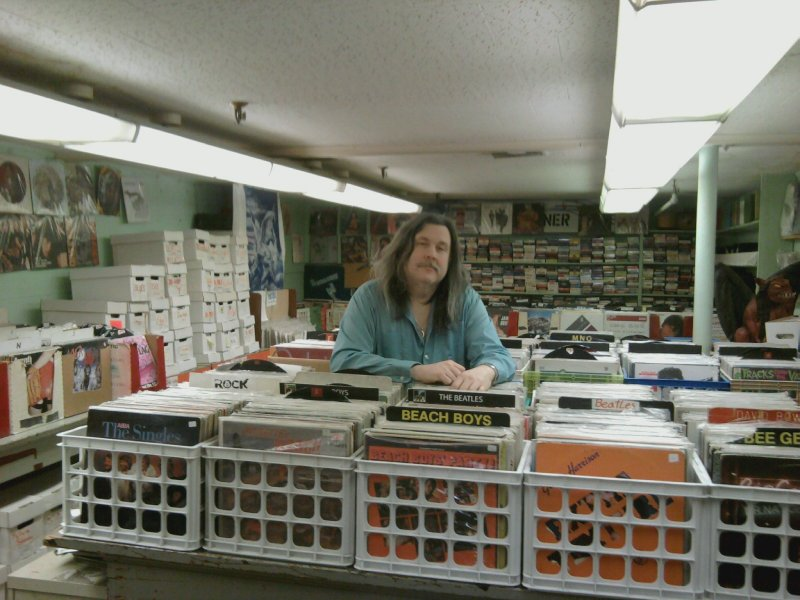
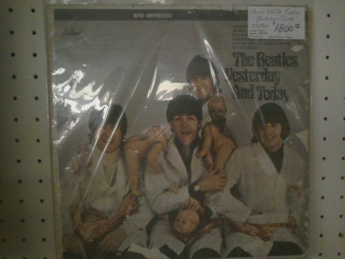
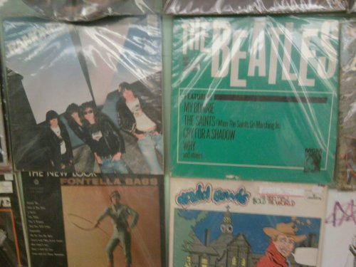
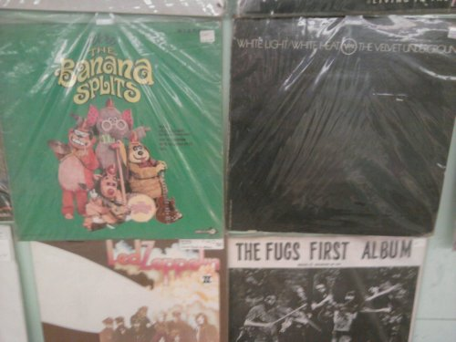

My Local Record Store
Here in the heart of the rust belt, where the textiles moved south then offshore decades ago and where the manufacturing never had time to move south and just went straight to the Pacific Rim, there lies an oasis for cultivated music enthusiast. On Bleecker St. in downtown Utica, NY, we find Off Center Records, owned by local musician and man-about-town, John Keller. John carries memorabilia, cds, stereo equipment and gear for musicians, but specializes in vinyl records where his collection, in terms of sheer numbers, rivals any I have encountered in NY State - and yes, I'm including Manhattan. This is my local record store and I consider myself one lucky dude to have this place so close. You can email him at [email protected], or call at 315-738-7651. You're looking for it? He's probably got it.

. . .
How did you come to fulfill every music lover’s private dream, owning your own record store?
Growing up, I was a 'music junkie.' It started primarily with Beatles. I became friends with the local record store owner (Mark Stanier/Record Realm). He introduced me to the wealth of music from jazz to Zappa to Psych to country. He began the Record Shows here in Utica. He helped me sort & price records I no longer listened to and I did the shows. After he passed away, I continued doing Record Shows until I had a huge inventory & looked for a store space. I opened in the American Mini-mall on Conkling Ave. I was there for 2 years until I found the location on Bleecker St. I've been here 19 years, so far.

The infamous Butcher Cover. Yes, he has one.
You have everything from cds to reel to reels, but your inventory of vinyl is nothing short of astounding. What do you think of the vinyl comeback we read about in the papers?
"Comeback" doesn't register in my vocabulary. For all the time I've been here, it never went away. I believed in vinyl even though all other retailers abandoned it. I knew, down deep, that it would return to the forefront again, The sound, the presentation, even the nostalgia, so to speak, wouldn't and couldn't be dismissed.

Ramones, Beatles, Bowie, etc.
What is the rarest record you have ever come across?
I guess it would be the Beatles Butcher Cover. Although, I've had 5 butcher covers so maybe it's not the rarest here. I've sold quite a few things I have not seen before or since. Examples are The Teenagers first album promo, Pink Floyd's Wish You Were Here w/ the original blue cover, The Fugs only single on ESP or the Timothy Leary/Ash Ra Tempel psychedelic album. Currently, amongst others, we have a mint Screaming Jay Hawkins LP on Epic, The Doors first in Mono, and still sealed original first pressings of Dylan's Greatest Hits, Standells Good Guys, Stones Out Of Our Heads & more.

Talk about eclectic. Here we have the Velvet Underground, Led Zep, the Fugs, and the Banana Splits
Do you have a dream record you’d love to one day get in the store?
Every record store owner and collector has dream records to someday own and/or display. Obvious choices are a first press Freewheelin' Bob Dylan or a first state Butcher cover. But realistically, there are a few 'common rarities' I am looking for like The Mamas and Papas album with the toilet cover, a gatefold KISS Destroyer, Rolling Stones Street Fighting Man picture sleeve, plus the multitude psychedelic albums that have been forgotten. There's always undiscovered treasures on everyone's want list.